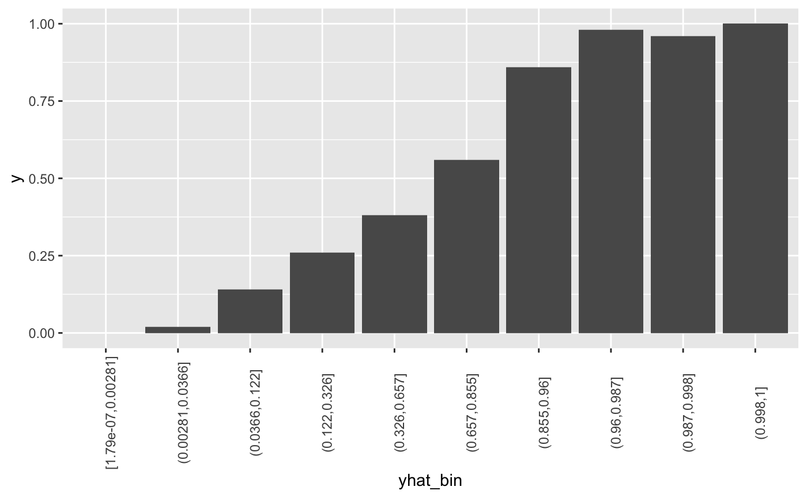
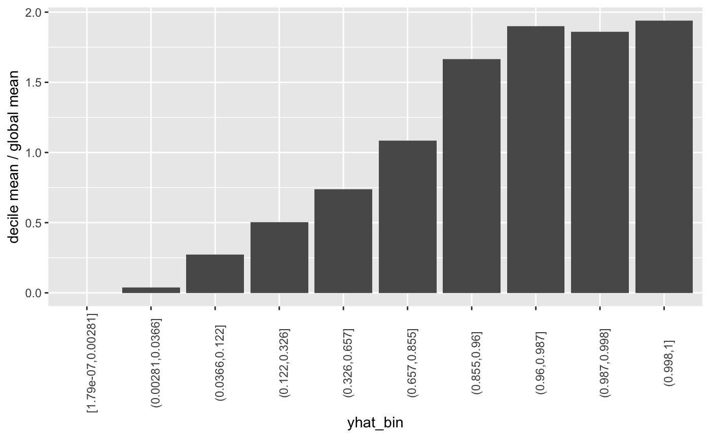
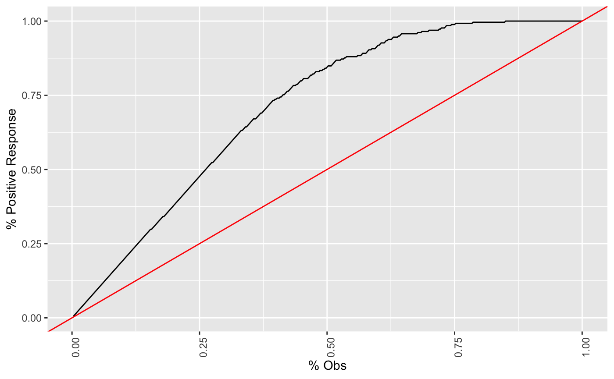
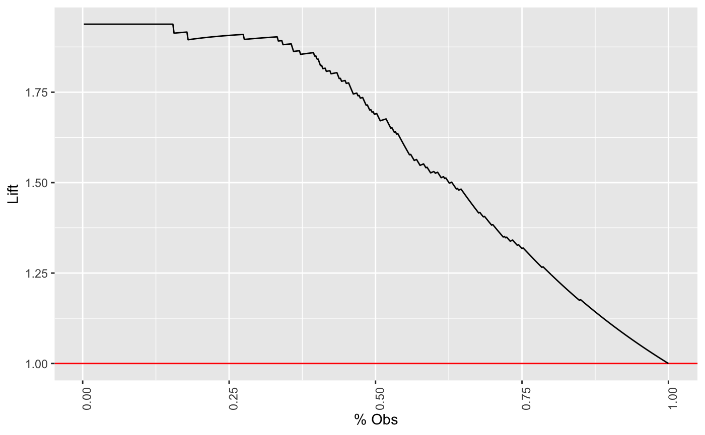

Lift is a measure of the effectiveness of a predictive model calculated as the ratio between the results obtained with and without the predictive model. (Hamilton 2019)
这句话提纲挈领，就是比较有模型和没有模型的效果。 ROC 曲线也适用这句话。
The greater the area between the lift curve and the baseline, the better the model. (Hamilton 2019)
这种直观判断类似于 AUC 和 KS 的判断。
Lift Chart
参考 Goldschmidt (2016a), Goldschmidt (2016b)
You can use this lift chart to verify that your model is doing what you expect from it.
相对于 KS 图等，参考 pyks，lift 图更能直观地向业务解释模型效果。
The basic idea of lift analysis is as follows:
group data based on the predicted churn probability (value between 0.0 and 1.0). Typically, you look at deciles, so you’d have 10 groups: 0.0 - 0.1, 0.1 - 0.2, …, 0.9 - 1.0 calculate the true churn rate per group. That is, you count how many people in each group churned and divide this by the total number of customers per group.
将预测值等值分到10份，计算每份中的真正 y 均值，查看单调性。

\[\operatorname{lift}=\frac{\text { predicted rate }}{\text { average rate }}\]
\(\text { average rate }\)指的是分组内的真实值的平均值。
Looking back at our example chart, the highest group would have a lift of 0.97 / 0.2 = 4.85 and the second-highest group of 1.8. That means, if you only target users with a score higher than 0.9, you can expect to catch nearly five times more churning users than you would by targeting the same number of people randomly.
因此通过观测图，我们可以发现，
最后一个组的 lift 值为 0.97 / 0.2 = 4.85，表示这组内某一个人，比随机抽一个人，流失率高达5倍左右。
具体实际例子参考 3.1 lift curve https://jiaxiangli.netlify.com/2018/06/03/kaggle-house-prices/#lift-curve
library(dplyr)
#>
#> 载入程辑包：'dplyr'
#> The following objects are masked from 'package:stats':
#>
#> filter, lag
#> The following objects are masked from 'package:base':
#>
#> intersect, setdiff, setequal, union
library(ggplot2)
## basic example code
Decile Chart
参考 Keating (2019)
The bars show the factor by which our model outperforms a random assignment of 0’s and 1’s. Reading the first bar on the left, we see that taking the 10% of the records that are ranked by the model as “the most probable 1’s” yields twice as many 1’s as would a random selection of 10% of the records.

Decile Chart 查看的是每个组内，decile mean 和 global mean 的差异，查看了模型和随机状态的差异。

Cumulative Gains Chart
It is convenient to look at the cumulative lift chart (sometimes called a gains chart) (Keating 2019)
Gain 图 和 Lift 图的术语常常混淆，这里以**Cumulative Gains Chart为主。
参考 Hamilton (2019)
| Cost ($) | Total Customers Contacted | Positive Responses |
|---|---|---|
| 10000 | 10000 | 6000 |
| 20000 | 20000 | 10000 |
| 30000 | 30000 | 13000 |
| 40000 | 40000 | 15800 |
| 50000 | 50000 | 17000 |
| 60000 | 60000 | 18000 |
| 70000 | 70000 | 18800 |
| 80000 | 80000 | 19400 |
| 90000 | 90000 | 19800 |
| 100000 | 100000 | 20000 |
相比较于随机模型(如下)，Cum Gain 是不同的。但是注意上面的图是累计状态的。
| Cost ($) | Total Customers Contacted | Positive Responses |
|---|---|---|
| 100000 | 100000 | 20000 |

Vuk and Curk (2006) 定义为 TP 和 Obs 的关系。

Cumulative Gains Chart 图中，就已经计算了 lift curve 相关内容
The graph is constructed with the cumulative number of cases (in descending order of probability) on the x-axis and the cumulative number of true positives on the y-axis as shown below. (Keating 2019)
计算逻辑显示是累计状态。

Cumulative Lift Chart
参考 Hamilton (2019), Lasek (2017)

For contacting 10% of customers, using no model, we should get 10% of responders and using the given model, we should get 30% of responders. The y-value of the lift curve at 10% is 30 / 10 = 3(Hamilton 2019).
For example, by contacting only 10% of customers based on the predictive model we will reach 3 times as many respondents as if we use no model. (Hamilton 2019)
三倍的效果，就是在没有做 AB test 的效果预测。
同时 % 可以估计份额，我们就可以估计 P * V = R，非常符合业务逻辑。

两条线在 100% 累计样本处汇合。
参考文献
Goldschmidt, Andy. 2016a. “Lift Analysis – a Data Scientist’s Secret Weapon.” KDnuggets. 2016. https://www.kdnuggets.com/2016/03/lift-analysis-data-scientist-secret-weapon.html.
———. 2016b. “Lift Analysis – a Data Scientist’s Secret Weapon.” Data Life Balance. 2016. http://blog.datalifebalance.com/lift-charts-a-data-scientists-secret-weapon/.
Hamilton, Howard. 2019. Computer Science 831: Knowledge Discovery in Databases. http://www2.cs.uregina.ca/~dbd/cs831/notes/lift_chart/lift_chart.html.
Keating, Barry. 2019. Business Forecasting & Predictive Analytics: Data Mining. https://www3.nd.edu/~busiforc/handouts/DataMining/Lift%20Charts.html.
Lasek, Jan. 2017. “Training Xgboost with R and Neptune.” Big Data Zone. 2017. https://dzone.com/articles/training-xgboost-with-r-and-neptune.
Vuk, Miha, and Tomaz Curk. 2006. “ROC Curve, Lift Chart and Calibration Plot.” Metodoloski zvezki. 2006. http://mrvar.fdv.uni-lj.si/pub/mz/mz3.1/vuk.pdf.